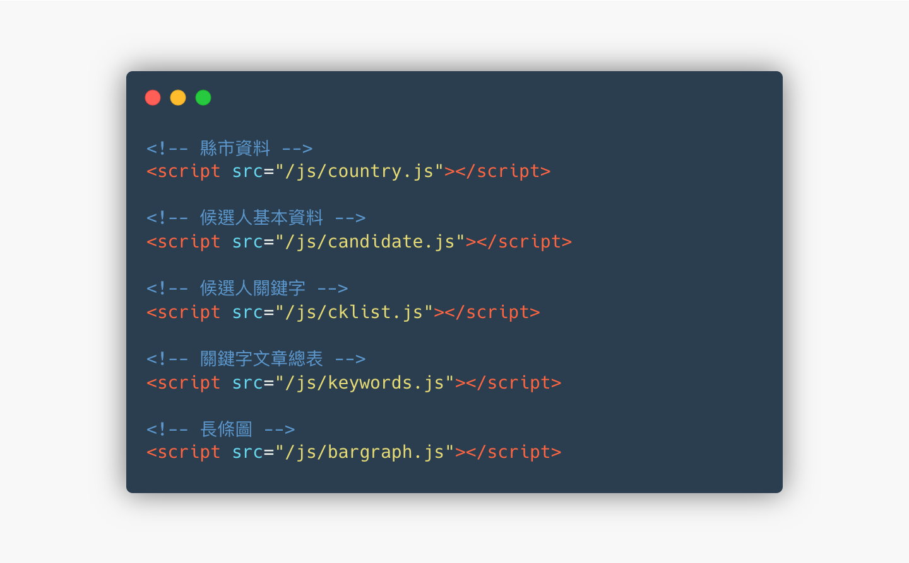

<main>
  <div class="container">
    <div class="row">
      <div class="mockup-with-video">
        
        <div class="ratio">
          <video
            src="assets/images/legislator/overall-page.mp4"
            poster="assets/images/legislator/overall-page.png"
            loop autoplay muted playsinline
          ></video>
        </div>
      </div>
    </div>
    <div class="row justify-content-center">
      <div class="col-md-10">
        <h2 class="text-surface mt-40 mb-20">
          自動請纓
        </h2>
        <p>
          稱不上是前端的身份參與下，開始研究怎麼讀取肥大的資料又不影響載入及互動速度，並能正常切換資料。
        </p>
        <div class="mockup-with-code">
          
        </div>
        <div class="h5 text-secondary mt-10 mb-0">由於不支援 JSON，只好包裝成 JavaScript 資料引用</div>
        <div class="row">
          <div class="col-12">
            <hr class="my-40">
            <strong class="label d-inline-block h5 text-secondary-variant mt-0 mb-5">同場加映</strong>
            <h2 class="text-surface mt-0 mb-20">
              2018 年九合一選舉議題視覺及整體網站
            </h2>
            <p>
              <a href="https://web.cw.com.tw/election2018/" target="_blank" rel="noopener noreferrer" class="btn-link text-decoration">https://web.cw.com.tw/election2018/</a><br/>
              組成專案合作小組，主打互動地圖。除了縣市首長外，本次選舉也得益於公投議題，獲得很大的關注。
            </p>
            <div class="mockup-with-video inline-mode mt-20">
              
              <div class="ratio">
                <video
                  src="assets/images/legislator/election2018.mp4"
                  poster="assets/images/legislator/election2018.png"
                  loop autoplay muted playsinline id="interactive"
                ></video>
              </div>
            </div>
          </div>
        </div>
      </div>
    </div>
  </div>
</main>